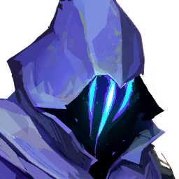

Minhas Estatísticas:
VALORANT
Acompanhe as minhas estatísticas no jogo FPS (First Person Shooter):
Maior Ranque:

platina 3
Agente mais jogado:

Omen
- Função: Controlador:
Os Controladores possuem habilidades que os ajudam a controlar áreas no mapa
HABILIDADES:
-
PARANOIA:
INSTANTANEAMENTE emite um projétil sombrio adiante, reduzindo brevemente o alcance de visão dos jogadores tocados. O projétil atravessa paredes.
- MANTO SOMBRIO:
Cria uma esfera de sombra duradoura que bloqueia a visão.
-
PASSOS TENEBROSOS:
Teleporte-se para o local em que vocẽ está olhando.
-
SALTO DAS SOMBRAS(ULTIMATE):
Teleporte-se para qualquer lugar do mapa. Enquanto se teleporta, Omen aparecerá como um Vulto que pode ser destruído por qualquer inimigo para cancelar o teleporte.
Para saber mais sobre suas habilidades: Habilidades do Omen
Agentes mais jogados por mim:
| Agente |
Partidas |
Taxa de Vitória |
Abates por Morte |
| Omen  |
419 |
45.8% |
1.01 |
Cypher  |
345 |
51.6% |
1.03 |
| Skye |
304 |
49.7% |
0.97 |
|